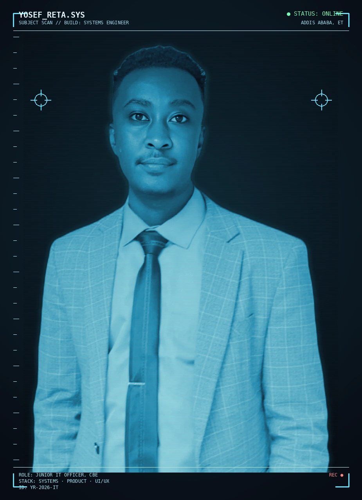

Junior IT Officer at Commercial Bank of Ethiopia. I build offline systems, full websites and desktop apps — and design the interfaces around them myself, start to finish.

In IT systems, product thinking and design work across banking and healthcare environments.
Offline tools built and running in real operational environments, from ATM monitoring to patient tracking.
Manual entry time cut on a hospital patient-tracking system I designed and built end-to-end.
Four systems, built for environments where downtime isn't an option. Tap a row to open it.
Ops staff needed to browse and monitor files across 200+ networked terminals — with no central database and no internet, ever.
Fully offline. No database. Portable single-executable. Role-based access.
A portable Windows desktop app with manual ping monitoring over raw sockets, network-share browsing, a built-in file viewer, and ZIP export — settings persisted to flat files.
Needed live, PRTG-style visibility into hundreds of LAN devices, without a paid license or cloud dependency.
Zero license cost. Zero external services. Had to feel enterprise-grade, not like a script.
A custom ICMP/TCP reachability engine feeding a live browser dashboard with a device-tree layout inspired by commercial NOC tools.
Teams needed a personnel/call tracker and an ATM network console — with zero IT overhead: no server, no install, no ticket.
Had to run as a single HTML file, entirely offline, no backend.
Browser apps using IndexedDB for storage, SheetJS for spreadsheet import/export, and Chart.js for reporting — opened directly from a file, fully functional offline.
Clinical staff at a public hospital tracked patient/referral data by hand, slowing intake.
Needed a lightweight, local, easy-to-learn interface — feeding into the hospital's broader EHR rollout.
A local web-based patient tracking system with simple forms and reporting, cutting manual entry time by roughly 40% — plus network infrastructure work (racking, trunking, configuration).
3+ years across banking IT and healthcare systems.
Technical assistance, hardware/software troubleshooting, LAN/WAN configuration and ATM connectivity support across multiple branches. Designed and tested support workflows that improved system reliability and cut ticket volume, acting as the liaison between technical teams and non-technical users.
Contributed to network installations, website deployment and IT system optimization for a public hospital, improving data accessibility. Participated in the early-stage EHR rollout, aligning functional requirements with technical delivery.
Designed and deployed a local web-based patient tracking system that cut manual entry time by roughly 40%. Built lightweight digital interfaces and forms with HTML, PHP and MySQL to simplify medical workflows.
I'm a systems/IT engineer at Commercial Bank of Ethiopia, with earlier experience building network and healthcare systems at the Ethiopian Federal Police Hospital. Beyond internal ops tooling, I build full websites and desktop applications end-to-end, and design the interfaces myself — from a client's first idea through to something they can actually use.